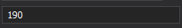
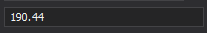

Mask Type: Extended Regular Expressions
Extended regular expressions allow you to specify a pattern that the entered text should match. The syntax is similar to the POSIX ERE specification.
Metacharacters
Metacharacters specify characters that users can enter at the corresponding positions. The table below lists the available metacharacters.
| Character | Description |
|---|---|
. |
Any character. |
[aeiou] |
Any single character from the specified character set. |
[^aeiou] |
Any single character not from the specified character set. |
[0-9a-fA-F] |
Any single character from the specified character range. |
\w |
Any single alphanumeric character. The same as [a-zA-Z_0-9]. |
\W |
Any single non-alphanumeric character. The same as [^a-zA-Z_0-9]. |
\d |
Any single numeric character. The same as [0-9]. |
\D |
Any single non-numeric character. The same as [^0-9]. |
\s |
Any single whitespace character (space, tab, etc.). |
\S |
Any single non-whitespace character. |
\x00, where 00 is an ASCII character code (two digits). |
An ASCII character. For example, [\x40] stands for '@'. |
\uFFFF, where FFFF is a Unicode character code (four digits). |
A Unicode character. For example, [\u00E0] stands for 'à'. |
\p{category}, where category is a Unicode character category name. |
Any character from the specified Unicode character category. For example, \p{Lu} stands for an uppercase letter. The following Unicode categories are available:Letter (L) – any letter. UppercaseLetter (Lu) – an uppercase letter. Entered characters are converted to uppercase. LowercaseLetter (Ll) – a lowercase letter. Entered characters are converted to lowercase. Number (N) – any number. Symbol (S) – a mathematical symbol, currency symbol, or a modifier symbol. Punctuation (P) – any punctuation mark. Separator (Z) – any separator. See UnicodeCategory for information on other categories. |
\P{category}, where category is a Unicode character category name. |
Any character not from the specified Unicode character category. |
\R. |
A character that separates a number’s integer and fractional parts. The culture’s NumberDecimalSeparator property specifies the actual character. |
\R: |
A character that separates hours, minutes, and seconds. The culture’s TimeSeparator property specifies the actual character. |
\R/ |
A character that separates months, days, and years. The culture’s DateSeparator property specifies the actual character. |
\R{character}, where character is a character name. |
The specified character. For example, \R{CurrencySymbol} stands for the culture’s currency symbol. The following character names are available:DayNames – a culture-specific full weekday name. The culture’s DayNames property specifies day names. MonthNames – a culture-specific full month name. The culture’s MonthNames property specifies month names. AbbreviatedDayNames – a culture-specific abbreviated weekday name. The culture’s AbbreviatedDayNames property specifies abbreviated day names. AbbreviatedMonthNames – a culture-specific abbreviated month name. The culture’s AbbreviatedMonthNames property specifies abbreviated month names. AMDesignator – the string designator for hours that are “ante meridian” (before noon). The culture’s AMDesignator property specifies the actual character. PMDesignator – the string designator for hours that are “post meridian” (after noon). The culture’s PMDesignator property specifies the actual character. DateSeparator – the date separator. The same as \R/. The culture’s DateSeparator property specifies the actual character.TimeSeparator – the time separator. The same as \R:. The culture’s TimeSeparator property specifies the actual character.NumberDecimalSeparator – the decimal separator in numeric values. The same as \R.. The culture’s NumberDecimalSeparator property specifies the actual character.CurrencyDecimalSeparator – the decimal separator in currency values. The culture’s CurrencyDecimalSeparator property specifies the actual character. CurrencySymbol – the currency symbol. The culture’s CurrencySymbol property specifies the actual character. NumberPattern – any numeric value in the culture’s number format. The culture’s NumberFormat property allows you to access number pattern settings. CurrencyPattern – any currency value in the culture’s currency format (without the currency symbol). The culture’s NumberFormat property allows you to access currency pattern settings. |
| Any other character. | Any other character that is not a metacharacter, quantifier, or special character. For example, a allows users to enter "a".To allow users to enter a special character, precede it with a backslash. For example, \* allows users to enter '*'. \\ allows users to enter ''. |
Quantifiers
Quantifiers follow a metacharacter and specify how many times the character should be repeated. The table below lists available qualifiers.
| Quantifier | Description | Samples |
|---|---|---|
* |
Zero or more matches. | \w* – zero or more letters. The same as \w{0,}. |
+ |
One or more matches. | \w+ – one or more letters. The same as \w{1,}. |
? |
Zero or one matches. | \w? – zero or one letter. The same as \w{0,1}. |
{n} |
Exactly n matches. | \d{4} – four digits. |
{n,} |
At least n matches. | \d{2,} – two or more digits. |
{n,m} |
At least n, but no more than m matches. | \d{1,3} – one, two, or three digits. |
Special characters
Special characters allow you to group expression parts and provide alternatives. The table below lists the available special characters.
| Character | Description | Samples |
|---|---|---|
| |
Alternate multiple expressions. | 1|2|3 – "1", "2", or "3".abc|123 – "abc", or "123".\d{2}|\p{L}{2} – two digits or two letters. |
(, ) |
Groups several characters into a single unit. | an|ba)t - "ant" or "bat".(net)+ – "net", "netnet", "netnetnet", and so on. Compare with net+ - "net", "nett", "nettt".(0|1)+ – a string of indeterminate length consisting of "0" or "1". |
Precedence
The order of precedence is as follows:
- Escaped Characters:
\.Sets:[]. - Grouping:
(). - Quantifiers:
*,+,?,{}. - Concatenation.
- Alternation:
|.
Examples
Example 1
\d+(\R.\d{0,2})? – numeric values with or without the fractional part.


\d+ stands for any number of decimal digits. \R. – the decimal point.
\d{0,2} – 0, 1 or 2 digits. ( )? – the inner expression appears only once.
Example 2
(1?[1-9])|([12][0-4]) – numbers in the range of 1-24.
| alternates (1?[1-9]) and ([12][0-4]). The first part matches numbers in the ranges of 1-9 and 11-19.
The second part matches numbers in the ranges of 10-14 and 20-24.